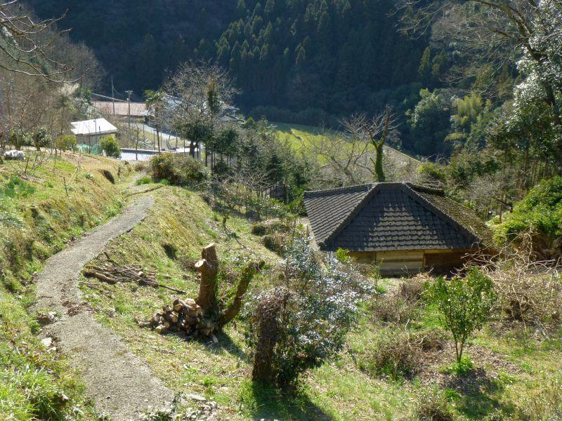
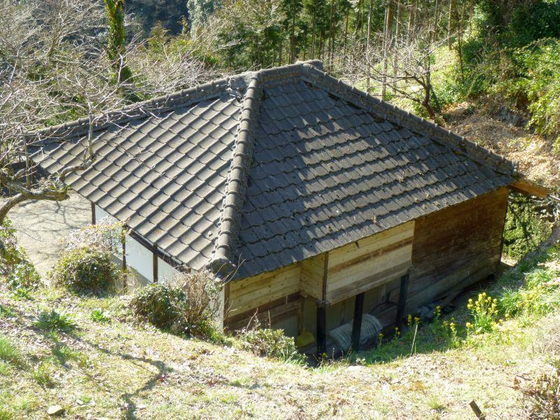
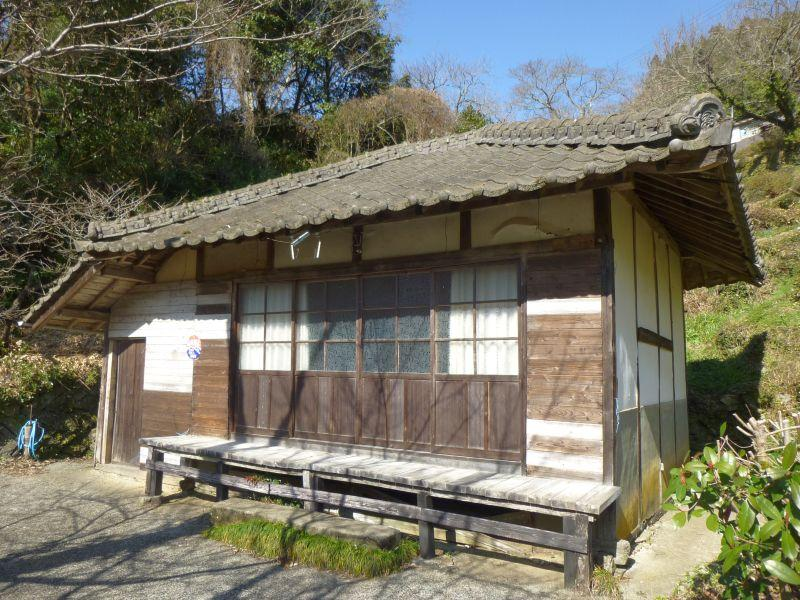
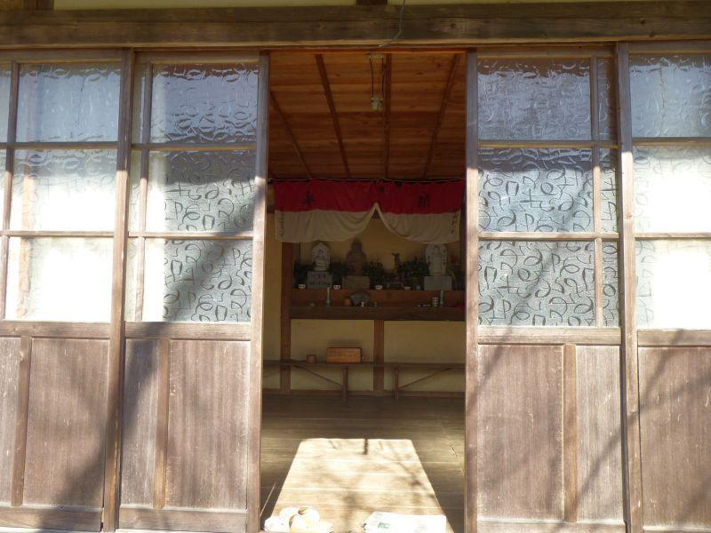
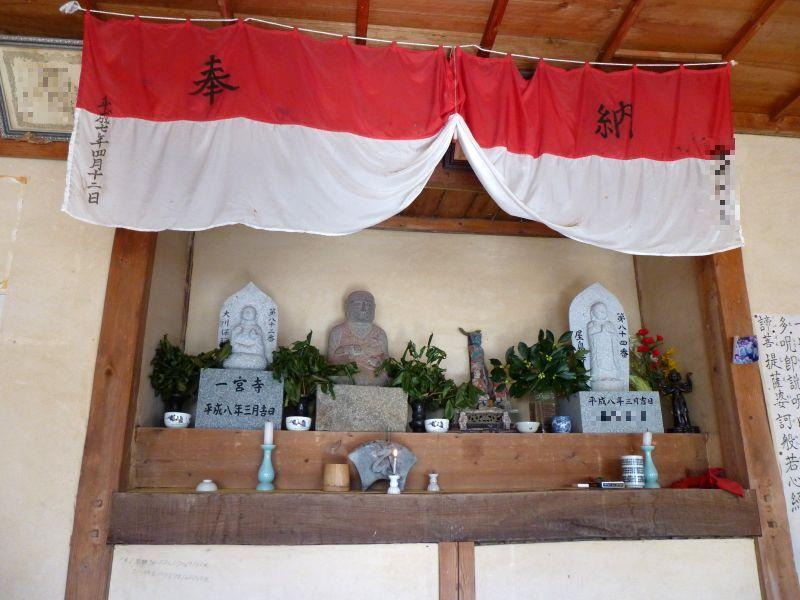
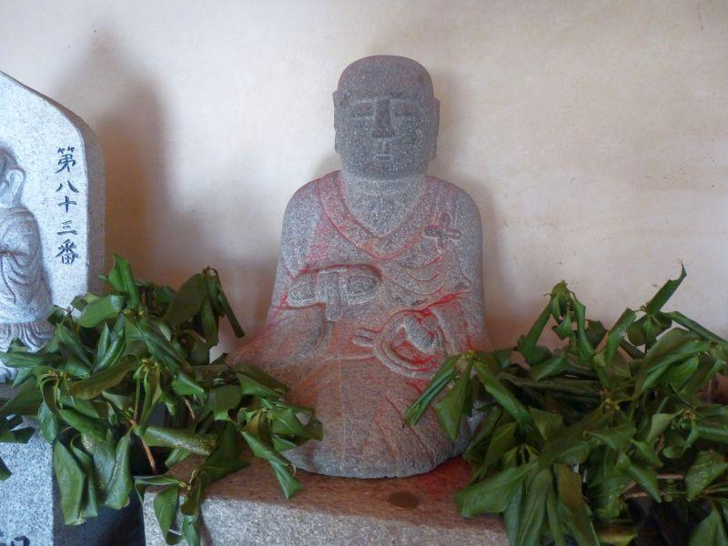
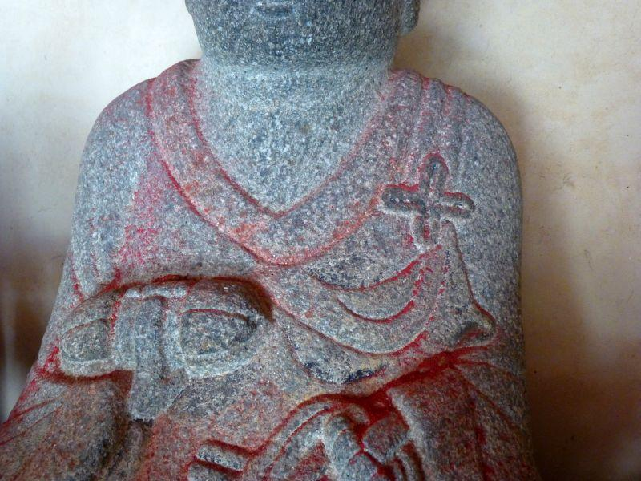

隠れキリシタンの里。十字紋の大師像・後編 < 隠れキリシタン / 愛媛県南予地方 >
隠れキリシタンの里。十字紋の大師像・前編 < 隠れキリシタン / 愛媛県南予地方 > 続き

南予(なんよ、愛媛県南部)の山奥、隠れキリシタンの里で 引き続き潜伏信仰の足跡を訪ねます。
家屋？お堂？
内容が内容だけに、案内看板等は一切無い。インターネットでの情報も乏しい。手掛かりは集落に点在する祠(ほこら)や、この地域であれば 茶堂(ちゃどう)を くまなく訪ねて回る事。
そんな状況の中で、右下の建物。
一見すると家屋のように見えますが、

建物背後に奥行きがあります。もしかしたら これは祭壇じゃなかろうか...

やってきました。
建物としてはあまり大きくない。隣や敷地内に母屋があれば 離れと言う事もできますが、独立した建物。家...ではないかな。
と考えていたら、通行人さん。
*「にいちゃん。おだいっさん拝みに来たんか」 (おだいっさん＝お大師さん＝弘法大師)
*「その中おるぞな。開けて拝みや」
外部からの通行人が居るような場所ではなく、その方は村人さんでしょうか。少しお話を聞きたかったのですが、聞き返す間もなく通り過ぎていかれました。
何はともあれ ここがお堂で大師が祀られていることはわかり、開けて拝んでも良いみたいなので 扉をガラガラ...
庵にはミニ八十八ヶ所と...

いらっしゃいました！ お邪魔します。

左から
> 第83番一宮寺(聖観世音菩薩)
> 弘法大師
> 観世音菩薩
> 第84番屋島寺(千手観世音菩薩)
ここは茶堂と言うよりか 「庵」
庵は "あん" もしくは "いおり" 。草庵(そうあん)と言ったりもします。
この場所のように諸仏を祀る簡易的な信仰の場であったり、放浪詩人など 浮世離れした者が住居とした建物を指します。
ここでは ミニ八十八ヶ所の一つが庵となり、そこに83番・84番札所の本尊が祀られている様子。
さて...
十字紋大師像

こちらのお大師さま。
赤くなっているのは 纏っていた前掛けの色が移ったものと思われますが、左胸にしっかりと十字紋が刻まれています。

独鈷杵(どっこしょ)
と
数珠
僧侶のアイテムを手にしているものの、ここでは左胸の十字紋が信仰の中心でしょう。
これがいつの時代のものかわかりません。また、キリシタン由来のものかどうか不明です。けれど、こちらの集落にあるお大師さまは 皆が十字紋をお持ちです。
表向きは四国八十八ヶ所信仰を信仰する形を取りながら、真相は キリシタン信仰に用いられていた...
どうでしょう。そうかもしれませんが、ここは四国であり、四国住民。八十八ヶ所には 何らかの信仰や想いを持っています。お四国さんを ただ隠れ蓑に用いるのではなく、そちらにも畏敬の念を持って拝みつつ 並行して隠れキリシタン信仰を行っていた、というのが真相ではないでしょうか。そうであって欲しいな。
藩政時代のキリシタン信仰は、発見されれば一家全体が断絶させられてしまうような重罪。密告の危険性もあります。その危険を犯してまで...
この集落に来て 信仰の尊さに触れ、神聖な気持ちになることができたような気がします。
お堂の扉をしっかり閉めて、この土地を後にしました。